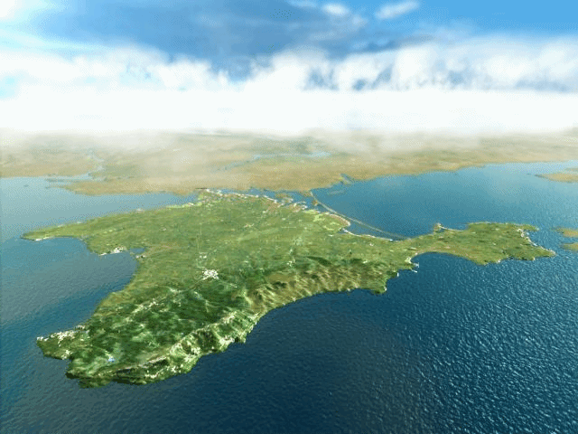
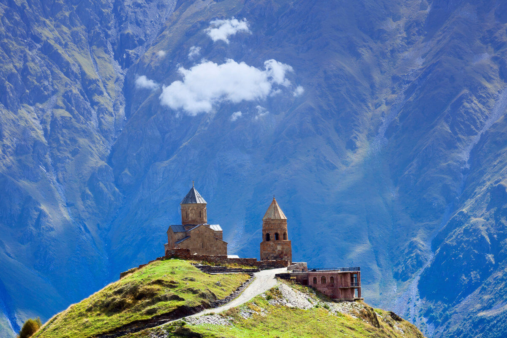
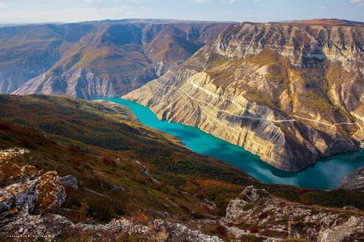
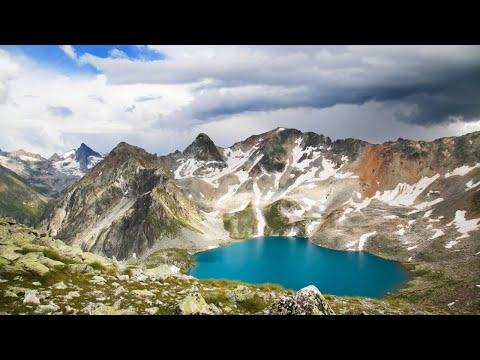

Привет! Меня зовут Ирина, и я рада приветствовать вас на своей
страничке!
Грузия
Общие сведения
Грузия — одна из самых простых стран для самостоятельных путешествий,
особенно в 2022 году, когда многие страны стали труднодоступны для
россиян. Почти всё взрослое население свободно говорит по-русски.
Менталитет местных жителей вполне привычный и понятный. Добраться не
слишком сложно, а цены на всё довольно низкие.

Регионы в Грузии
Административно вся территория Грузии разделяется на девять краев, две
автономные республики (Аджария, а вторая — Абхазия, частично
признанное независимое государство), и один город государственного
значения — это столица страны, Тбилиси.

Церковь святой Троицы, Гергети
Дагестан
«И по ночам мне снится вся красота, что в Дагестане…» — душевно поёт
певица SABINA. После поездки в этот дивный край такие сны придут и к
тебе, не сомневайся! За последние пару лет Дагестан стал настолько
популярен, что не услышать восхищений по поводу его красот просто
невозможно: земледельческие террасы, как на Бали; горы, как в Перу; Язык
Тролля, как в Норвегии; каньоны, как в США; и самобытная культура (как
нигде в мире).

Сулакский каньон
Кавказ
Очень тяжело делать обзор по Кавказу в стиле «ТОП-10 мест, в которых вам
обязательно нужно побывать». Потому что весь Кавказ — сплошной топ. За 3
недели мы посетили множество непохожих друг на друга мест, которым я
посвятил отдельные рассказы. Каждое из них уникально и по-своему
интересно.

Озеро в горах КавказаГорная река на Кавказе